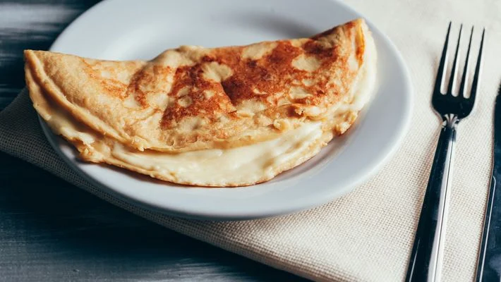

Cheese Crepioca

Description
Crepioca is a brazilian food that combines tapioca (another common brazilian food) and crepe (a type of pancake).
Combining the carbohydrates of tapioca flour or tapioca starch (originated from the roots of cassava plants) and the
protein from eggs, crepiocas are a good option for someone who is on a healthy, fit or gluten-free diet.
Ingredients
- 40 grams of tapioca starch / tapioca flour
- 2 whole eggs
- 20 grams of mozzarella cheese (or any cheese of your liking)
- Pinch of salt
Steps
- In a bowl, mix the tapioca and eggs.
- Slice the cheese into small cubes and mix with the tapioca.
- Add salt and other seasonings of you liking (parsley is a great option for this recipe!).
- In a preheated non-stick frying pan, pour the mix and cook in low heat until the top of the crepioca is no-longer liquid.
- Flip the crepioca and cook until golden brown.
- You are ready to serve! Additionally you can stuff the crepioca with cheese like a taco.